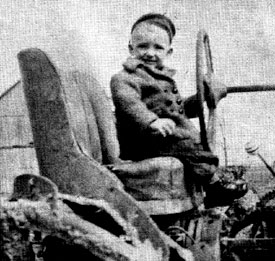

John Shuttleworth, Founder Of Mother Earth News, Interview Part I
A Plowboy Interview with Shuttleworth who discusses his experiences living the self-reliant life that Mother Earth News is famous for, and how the idea for the magazine came about.
By John Shuttleworth
January/February 1975
Unlike the founding editor-publishers of many magazines, John Shuttleworth does not particularly care to fill the pages of his baby - Mother Earth News - with signed articles of opinion or pictures of himself. As a matter of fact, it's even difficult to tell by reading the masthead that Shuttleworth and his wife, Jane, founded the magazine in the first place.
"Jane and I are both rather introverted farm people, "John says, "and we weren't looking for glamor when we started Mother Earth News. Besides, just the two of us did everything in the beginning and it would have been ridiculous to put our names on the masthead 10 or 15 times each back then. We just kind of got into the habit of listing ourselves once with no title and letting it go at that. "
And so it goes still. Little wonder that new subscribers to the magazine frequently wonder who is responsible for the periodical and how it came to be published.
In honor of the successful completion of the magazine's fifth year and in an effort to attract new people into the ecology and alternative lifestyle publishing field, Shuttleworth has finally - and somewhat reluctantly - agreed to answer those and other questions.
PLOWBOY: John, let's begin at the beginning. How did you come to found Mother Earth News?
SHUTTLEWORTH: You have to go back far more than five years to get the answer to that one. And don't be surprised to learn that the question might have been more apt if you had asked how Mother Earth News came to found me.
PLOWBOY: What do you mean?
SHUTTLEWORTH: I mean - given who and what I am - there was little chance that I wouldn't eventually wind up working with something like this magazine.
You have to consider first of all, I guess, the stock from which I come. I'm 100 percent Swiss-German on my mother's side and English - with rumors of Welsh, Irish, Scottish and French blood - on Dad's side of the family. I think that's important to know if you want to understand me. Because I'm always seeing in myself the very English tendency to impetuously set out on some grand voyage of discovery, balanced by the well-known Swiss propensity for paying meticulous attention to the details of whatever I do. This, of course, is an ideal heritage for the editor-publisher of a magazine to have.
Now it happened that both my maternal and paternal grandfathers were each in his own way gifted men. It also happened that both carried into the 20th century the dreams that had worked so well on this continent for the white man during the 18th and 19th centuries: Move on. There's always something better around the bend. Your fortune is waiting in the next territory, in the next state, in that big strike out west, in the new industry back east.
Unfortunately, the frontier for which that attitude was so well suited came to an end around 1890. And, unfortunately, my grandfathers - just like a great number of the more talented men of their generation - preferred to overlook the closing. While others with less imagination were content to hang on to the first piece of land they homesteaded or the first job they landed in a company town, my grandparents - and a lot of men like them - weren't. Instead, they were always ready - eager! - to pull stakes at the first rumor of better times in another state or another line of work.
As a result, my mother grew up in the Swiss settlements near Indiana's Limberlost Swamps, in Oklahoma and Texas oil boom towns, and in various and sundry locations in and around Muncie, Ind. Her father made a living, such as it was, mainly as a trader. He bought and sold horses, cars, livestock, land, houses, machinery - whatever there was a deal to be made on. When all was said and done, however, Johnny Kuntz was too gentle a man for that way of life. He was the kind of guy who'd give you the shirt off his back, and other people generally took it. My mother grew up poor.
Dad didn't fare any better. He was one of 10 children, and Grandpa Shuttleworth dragged his family from Indiana to a homestead in South Dakota to Virginia to Ohio and back to Indiana. I don't know how many moves they did make, but I think Dad went to five different schools for the first grade alone. All that traveling around, of course, was largely unnecessary. My grandfather could pick and choose his work. He was a damn good blacksmith and mechanic. For his day, he was a passable farmer and I understand that he had rather uncanny abilities when it came to training horses and dogs. He also originated a lot of laborsaving devices, and family legend has it that he invented the roller bearing, installed one on an old worn-out water-pumping windmill, and then had the idea stolen by the man who later founded the Timken Roller Bearing Company. That may be true and it may not. What matters, as far as my father was concerned, is that my grandfather had trouble settling down. He was a drifter and a tinkerer and dad grew up as poor as Job's turkey.
As so often happens, however, my parents' uncertain childhoods guaranteed a very secure upbringing for my sister and
me. Mom and Dad were married in 1928 and started their life together with hardly a nickel to their name. Due to the way they were raised, though, they were both coming - as the song from The Unsinkable Molly Brown says - "from nowhere on their way to somewhere." They were not afraid to work night and day - in other words, to build some security for themselves - and they did.
Just about the time they were getting on their feet, of course, the Depression knocked my folks flat again. But that only made them work harder. And little by little they scrimped and saved until they could make the down payment on 40 acres between Eaton and Wheeling, Ind. Now 40 acres isn't much, and the land through that area certainly isn't the richest in the world - but that's where I spent the first seven years of my life and that little farm was like a kingdom to me. Times were tough for a lot of people back then in the late 30s and very early 40s, but we had a big garden and cows and pigs and chickens, and we always ate well.
A great number of friends and relatives also ate well at our place, had their hair cut free by my parents, their cars and broken appliances repaired at no cost by my father, and went away laden with gifts of food canned by my mother, and otherwise weathered the depression more or less at the expense of Dick and Esther Shuttleworth.
Now you may think that I'm leading you away around the barn with this family history when all you really want to know is how I finally came to start a back-to-basics magazine known as Mother Earth News. But there's no wild goose chase involved here at all.
What I've just told you, you see, is that I learned at my parents' knee that simple, straightforward, hard work will - nine times out of 10 - beat a will-o'-the-wisp rumor of easy fortunes in the next state. My earliest memories are of the warmth and security that self-sufficiency can give you when a seemingly endless stream of other people do not know how to raise or preserve the food they need or repair the equipment they have or even cut their own hair. And I was taught by example at the earliest possible age that it is good to share your surplus and your knowledge with those who need it.
And that, of course, is a great deal of what Mother Earth News is all about. I'm only doing on a larger scale what my folks did over 30 years ago. I was absolutely programmed to publish this magazine. The only difference between what they did then and what I'm doing now is that they reached dozens of people and I carry the message to millions.
PLOWBOY: You say that hard work, self-sufficiency and sharing are "a great deal of what Mother Earth News is about." What else, in your mind, is of primary importance to the magazine?
SHUTTLEWORTH: Well, there's a strong preoccupation with what is known in the United States as "Yankee ingenuity," with finding the simplest, easiest, least energy-intensive way to do a certain job or accomplish a defined goal. Again, any claim to expertise I have in this area is entirely due to my parents and the way I was brought up.
The only tractor we had on that first farm was homemade and Dad built it. It was a good one too. Dad also designed and constructed the big portable welder we had. Then, after he traded it off and another guy tore it up, he bought it back and rebuilt it. It's the same welder we've been running lately on methane.
Another very important piece of Dad's Yankee ingenuity that made a profound impression on me was the windplant that supplied our electricity on that first farm, I was born the son of Tom Swift, you see, and that's been a tremendous advantage for me as I've edited this magazine. Some of the people now trying to write about things like windplants have never even seen one, but the first electricity I ever used came from a wind-driven generator.
This has given me a feel for windplants, a sense of rightness about clean, renewable sources of energy, and a standoffish attitude toward fossil fuels and things like nuclear-powered generators.
It was this feel for the so-called "alternative" sources of energy and disdain for what our society considers "conventional" fuels that led Mother Earth News to be one of the initial New Life and environmental publications to actively promote wind, solar, methane and other renewable power sources. Which, in turn, put Henry Clews - as he has stated many times - into business as the first of the current new crop of windplant dealers. And which, according to Al O'Shea, founding President of the American Wind Energy Association, originally helped direct his attention to alternative sources of power.
So, once again and just to keep the record straight, while it's true that Mother Earth News is largely responsible for setting a trend in motion; and while I'm responsible for putting the magazine on the particular path in question, the credit really belongs to Dick Shuttleworth and the windplant he built over 40 years ago. I'm just my father's son.
PLOWBOY: OK. We've now got hard work, self-sufficiency, the sharing of knowledge and Yankee ingenuity down as important concerns of Mother Earth News. Is there anything else?
SHUTTLEWORTH: Yes, we've saved the real biggie till last. And that's Mother Earth News' overriding interest in the perpetuation of the planet and its fragile ecosystem. The magazine's most basic philosophy is that what's best for Earth and the preservation of its delicately interwoven web of life is, by definition, what's best for humankind. We are part of that web, you know, no matter how grandly our species generally tries to ignore the fact.
PLOWBOY: Is this your contribution to Mother Earth News' philosophy?
SHUTTLEWORTH: I'd like to think so but, no, my conservationist tendencies were also imprinted on me quite dramatically by my parents. When I was seven, you see, we moved to a 144-acre farm near Redkey, Ind. And I use the term "farm" charitably.
That place was a wasteland when the folks bought it. The soil was so poor that nothing but pumpkins grew in the cornfield. Ditches big enough to hide a Farmall tractor were everywhere. The barn was falling down. The hog lot was saturated with disease. The only thing growing around a couple of fields were fifty-foot-tall Osage orange trees, and their main crop was stickery spines an inch and a half long. The house was at least sound, but so filthy that there was a layer of caked dirt, grease, spilled food and old linoleum in the kitchen six inches thick. The front yard had been picked bone bare by the scraggly chickens that kept trying to get in the door. It was a real Ma and Pa Kettle situation.
Dad called in the county agent and he took one look at the place and sent for a regional representative of the U.S. Department of Agriculture (USDA). And together with my father, the two "experts" went all over the farm and took soil samples and made transit readings and drew up charts and otherwise analyzed those 144 acres.
PLOWBOY: And?
SHUTTLEWORTH: And, when they were all finished, the "experts" told Dad that there was simply no way he could rebuild that farm. That it was beyond saving.
Well, right about then was when we lost our respect for the USDA - because we all rolled up our sleeves and we did rebuild the farm. Dad rigged up a transit on the tractor, bought a roll-over scoop and a Graham plow, and made terraces around the hillsides that were washing the worst. He let the Canadian thistles grow and planted alfalfa and other deep-rooted crops that could reach down through and bust up the hardpan which was about all that was left in most of the fields.
We became dairy farmers so we'd have a lot of manure to put back on the land every year. We paid to have humus in the form of corncobs that nobody else wanted hauled to our place from the grain elevators in neighboring towns. We even had cinders brought out from the factory where Dad worked to get the money we needed to revive that farm.
Damn, it was hard work. Dad worked in town and Mom milked 35 cows by herself, morning and evening. They'd both be out in the fields on weekends and until dark every day, and then stay up half the night remodeling the house and rebuilding the barn and toolsheds. My sister and I were too little to be much real help in the beginning, but we always had our chores and we grew into the bigger jobs as time went on. Still, I never knew either of my parents to take a vacation - or even stay away from home overnight, except when hospitalized once or twice - until I was in my mid-20s. They just worked day and night.
And it paid off. My folks' farm is one of the best in the area now. As a matter of fact, it's a lot better than some that were good farms when they bought the place. While the big agribiz boys were pulling the life out of their soil, Dad and Mom were putting life into the land they had.
Of course the economics of "modern" farming finally caught up with them and, in recent years, the folks have been forced to pay the taxes and hold onto the place by pouring on the chemical fertilizers and weed killers. Funny thing, though. They don't raise alfalfa like they used to, and they've been losing calves for no apparent reason. And last summer some pesticide blew across the road from a neighbor's field and made all of Mom and Dad's cows sick.
So, as a result of what I've seen with my own eyes and done with my own hands, I'm convinced that the natural way is the best way. Take care of your land and it'll take care of you. There ain't no free lunch. You can't pull more out of the soil in the long run than you put in.
This is something else I know down in my gut from firsthand experience and, although it's frequently reflected in the pages of Mother Earth News, I can't take any real credit for it. Once more, I'm just my parents' child.
PLOWBOY: All right. It's obvious that your early upbringing is reflected in the pages of the magazine. But how did you get from away back there to where you are now? What happened in between?
SHUTTLEWORTH: Well, you know how it is with young bucks. You can hand them the wisdom of the world on a platter - and, in many respects, that's exactly what I was handed - but they can't recognize it for what it is until they go out and make a few comparisons on their own. It's a matter of developing judgment and everyone has to do that for him or herself.
After high school I went to a local college for just under two years and then, in 1958, I kicked over the traces and began to roam. Each generation tends to do the opposite of the one just before, you know, and - since my folks were such homebodies - I guess it was only natural that I hit the road like my grandfathers.
PLOWBOY: Where did you go? What did you do?
SHUTTLEWORTH: I covered a good bit of ground and I tried my hand at a number of things. Over the next 10 years I lived for various lengths of time in Oklahoma City, British Columbia, Philadelphia, Mexico City, Seattle, Honolulu, New York City and a lot of points in between. I even went to Europe for two months once as the road manager for a group known as The Bitter End Singers. I worked on the flight line at an airport, in two different aircraft electronics shops, in an advertising agency on New York's Madison Avenue, as a service station attendant, for Boeing on the SST, in a plastics factory, as a truck driver for Seaview Farms in Hawaii, for a tradeshow display shop, as a door-to-door salesman, in promotion and as a freelance cartoonist/writer. In all, I had 30 or 40 changes of address during that decade of my life, and I held down 80 or 100 jobs. Somewhere along the way I learned how lucky I had been to grow up the way I did.
Actually, of course, it wasn't so much that I learned as that I relearned to value my upbringing on a small family farm. I would have been quite content to stay right where I was and never leave the country in the first place, you see. It's just that such a course of action wasn't possible.
What our politicians like to call "progress" had begun to squeeze the little farmers off the land shortly after World War II. By the time I was old enough to have my own place, it was no longer possible to hold onto one in the old way. The boom was on, and whether you liked it or not, the suburbs and the big farmers were pushing up the value of your shirttail-size place. That meant higher taxes every year, taxes that were harder and harder to pay because everything you sold - cream and eggs and the occasional cow or pigs or chickens - brought less and less.
It didn't matter that your produce was healthier and tasted better or that the way you raised it was easier on the land. The folks in town only seemed to care about price, the one thing that agribusiness could deliver.
And so the factory farmers poured on the chemicals and flooded the supermarkets with cartons of standardized, thinshelled eggs that contained watery-yellow yolks,. and the local grocery stores stopped taking in trade the little farmers' mixed baskets of large, medium and small eggs with the bright-orange yolks that stood up so firm in the pan. The big dairies learned how to palm off 2% butterfat milk as the "real thing." This left them with so much excess cream for butter and other products that the market for home-separated cream disappeared.
And so it went, and so went the small family farm. And so a whole generation of farm people was cast adrift to find a new place in the world.
PLOWBOY: And you were one of those cast adrift.
SHUTTLEWORTH: Yes, and I didn't like it. I hadn't liked this business of squeezing people out of the country and into cities from the very first day that I became aware of what was going on. I guess I was about six at the time - and I set out to do something about it.
PLOWBOY: You set out to do something about preserving the family farm when you were only six years old!
SHUTTLEWORTH: Well, I didn't expect to solve the problem overnight, but, yes, I began to prepare myself for that role in life when I was no more than six.
Thirty-one years ago, you know, we were all a lot less frivolous than we are now. Especially us Depression babies. We were few and far between and we grew up in families that counted - first, pennies, and second, as we plunged into World War II, ration stamps. This molded us into quite a practical generation at a very early age.
In my own case, I was doing useful work by the time I was three or four. As a matter of fact, Mom has photographs of me at that age sitting on the seat of our homemade tractor, steering it across a field while Dad forked manure off a wagon that was hooked on behind.
Now I hasten to add that my father had that tractor geared down so low that it was barely creeping when I did this, so there was absolutely no danger involved. I also want to point out that I was not being exploited in any way. Quite the contrary! I thought that steering the tractor around was a glorious way to spend the day. The fact remains, however, that I was doing useful work and I knew it was useful work, and I knew that the world placed a high value on such activity.
God! Now that I think of it, I realize just how incredibly lucky I was to grow up that way. I was being taught what life is really all about from the first day I drew a breath. There was very little to distract us from the straight-and-uncut back then, no trash compactors or "convenience foods" or corporations telling us how nuclear power would save the throwaway society. We didn't have a throwaway society. Every bit of string, every paper bag, every bread wrapper got saved and reused, sometimes five or six times.
Well, I digress. The point is that the kids I grew up with were pretty damn realistic by the time they could walk around. And, even in a crowd like that I used to stand out as a little more advanced and a little more reflective than most. I was reading when I was four and Mom has often said that I "was born a little old man." I was always trying to figure out what was on down the road.
This analytic tendency was strongly reinforced, by the way, when I had my right eye horned out by a cow when I was five years old. The eye's all right now, except that it "cries" when I'm tired or out in the wind. But that fact - the "crying" - and the fact that I had to wear an eye patch on and off for some time after the accident really set me apart from my peers at a critical age.
Children can be rather brutal about something like that, as I'm sure you realize, and for the most part - from the age of five on - I came to prefer my own company or the company of adults. I became even older for my age, and it seemed only natural to me to begin planning my life's work about the time I was entering the first grade.
PLOWBOY: And you, of course, wanted to preserve the family farm even at that time. Where did you start?
SHUTTLEWORTH: From the very beginning I realized that people were losing their land because they couldn't pay their taxes or they couldn't scrape up the money due on a mortgage.
Now these were good and decent people. People with simple tastes. They didn't need or want a lot of money, but it was evident that they did need some. And that set me off on a lifelong search for self-employment and home business ideas. By the time I was 10 or 11 I already had a pretty good file of clipped articles on the subject, and I had already answered half the "make money at home" ads in the classified sections of the mechanics magazines.
Most of the "plans" offered for sale, of course, were utter trash. Pipe dreams that made a lot more money for the guy selling them than they'd ever make for the people doing the buying. Once in a while, though, I'd turn up a real gem.
One of the best of those early plans, as I recall, was a $3 mimeographed set of instructions I bought from the "3M Company" in Argyle, Wis. The three Ms stood for something like "Merchants' Mimeographing and Mailing" service, and the folio I got for my money told me how to get paid for organizing and distributing a little "booster" newspaper for the stores in a small country town. It was a good idea for the time; although, like so many other businesses with genuine merit, it was eventually taken over - and is now dominated - by real moneygrubbers.
PLOWBOY: Did you turn up anything else that you considered particularly good at that time?
SHUTTLEWORTH: Yes, when I was only seven or eight I began seeing those fantastic ads for Ed and Carolyn Robinson's Have More plan.
PLOWBOY: The ones that said, "A Little Land . . . A Lot of Living"?
SHUTTLEWORTH: Yep! "How to Do Wonders With a Little Land!", "The New Science of Miniature Farming," "How to Make a Small Cash Income Into the Best and Happiest Living Any Family Could Want."
Those headlines just knocked me out. For some reason I never seemed to have the money to send off for the actual Have More plan at the time, but I used to read those ads over and over and over again. That's what I was talking about! I finally filed one of the Robinson advertisements away when I was about 10, absolutely determined that I'd own a copy of Ed and Carolyn's plan one day.
PLOWBOY: And did you?
SHUTTLEWORTH: Yeah, but a few things happened in between. My sister and I both had polio, for instance, in the fall of 1948.
PLOWBOY: You both had polio?
SHUTTLEWORTH: Yes, that was unusual - and I still have my own theory about the "coincidence."
The summer before we were stricken, Mom bought a bunch of military surplus pressure bottles full of DDT. And we really sprayed that stuff around the milkhouse and all over the kitchen. A lot got into our food, you know, because we didn't realize what we were doing. I mean, this was the latest thing wasn't it? Direct from Uncle Sam. The best. It was what our army had used in camps all over the world. Guaranteed to kill every fly it touched.
Well it didn't kill every fly. As a matter of fact, insects in general - the creatures that DDT was supposed to kill - quickly developed a surprising immunity to the poison. Birds and small mammals weren't so adaptable, however. And I've got a sneaking hunch that people weren't either.
PLOWBOY: What do you mean?
SHUTTLEWORTH: I mean that DDT kills by attacking the nervous system. And polio is a disease of the nervous system. Now I'm not necessarily saying that DDT directly causes polio, but it seems reasonable to me that anyone who breathed as much DDT as my sister and I did that summer might very well be more than ordinarily susceptible to contracting polio.
I'm not the first to have this idea, by the way. I remember some health surveys conducted back in the late 40s and early 50s which turned up the unexpected fact that polio was a lot more common in the so-called "developed" countries - the ones then using DDT - than it was in the undeveloped parts of the world.
At any, rate, I had a lot of time to think about that and other things while I lay in an iron lung and while I was wrapped in scalding "hot packs" - the Sister Kenny treatment - and while I was learning to walk and use my arms again. And while I went through some of the absolutely most painful, physically and emotionally, experiences of my life.
Now this was a pretty big number for an 11-year-old to handle. Especially since I was declared clinically dead at one point when I was in the iron lung. I still have a vague recollection of floating around up near the ceiling someplace and looking down on my body in that machine. I don't know if, as the mystics say, I actually left the physical realm or not, but I figure that, from the age of 11 on, everything has been a gift.
PLOWBOY: Do you have any aftereffects from the polio?
SHUTTLEWORTH: Yeah, I don't have any tricep muscles in my arms; my stomach muscles are pretty well shot; I'm missing some muscles I should have across my back and shoulders; and I've got short hamstrings in both legs.
But you learn to substitute what you do have for what you've lost. I couldn't push bales of hay up on top of a wagon like the other guys after I got out of the hospital, for instance, but I could swing those bales anywhere they needed to go. And I could always work longer and harder than anyone else.
When all was said and done, then, I certainly did not enjoy having polio and - given the choice - I'd most certainly have avoided it if I could. Still, like so many other things in my life, polio definitely helped program me for what I'm now doing.
Number one, it gave me - right or wrong - a deeply felt gut suspicion that all the pesticides, preservatives, plastics and other chemical "wonders" of the modern world never really do accomplish the good they're supposed to do. Rationally or irrationally, in fact, I have a strong feeling that when you consider the pollution created by their manufacture, their demands on nonrenewable resources, their devious side effects, the problems created by their disposal, etc., that most, if not all, of these "miracle" man-made products are bad. Just plain bad. I've still got a grudge against DDT, you see.
Number two, polio quite directly hurt me, physically and emotionally, about as deeply as I think I can be hurt. It showed me my absolute limits at a relatively early age, in other words, and thereby gave me an extremely valuable form of self-knowledge that some people never have.
Number three, it left me with the distinct feeling that every day of my life after that period in the iron lung was a gift, a gift to be used wisely and well.
Number four, by leaving me to work out ways around my physical handicaps - which I did - polio reinforced one of the main lessons taught me by my parents: that hard work will solve anything.
And, number five, by saddling me with some severe physical limitations just as I was entering the time of fife when physical strength is most important, polio encouraged me to leapfrog on to the next - and more intellectually focused - stage of existence. That is: Since I could not meaningfully compete on the teenage playing fields of basketball and baseball, I quickly moved up into the adult, dog-eat-dog, competitive world of freelance writing and cartooning.
PLOWBOY: The Big Time!
SHUTTLEWORTH: Yes, this was the Big Time. One of the arenas where the gladiators fought for their daily bread. Unlike factories and offices with their child labor laws and other restrictions, however, this was a "for real" section of adult life in which a 14-year-old kid could compete on equal terms.
As long as I prepared my submissions neatly and professionally, and as long as my work was up to adult standards, no magazine editor had any real way of knowing whether I was 14 or 44 or 94. So I plunged in and, by the time I was 16 or 17, I had sold a lot of gags to cartoonists, cartoons of my own to several middle and minor magazines and a self-illustrated article to an international aviation publication.
I never made a great deal of money with this part-time work, but it gave me a tremendous amount of self-confidence and prestige at a time when I needed it. And, although I didn't know it then, the small success I enjoyed as a freelancer back there in the mid-50s would eventually lead me - virtually by the nose - into founding Mother Earth News 15 years later.
PLOWBOY: By the time you were in your late teens, then, the course of your life was set.
SHUTTLEWORTH: Exactly. I knew who I was. I knew where my allegiance lay. I knew who and what I considered to be the enemy. And I had already begun sharpening my skills as a communicator so that I could work effectively for what I thought was good and against what I felt to be bad.
PLOWBOY: Then why didn't you start something like Mother Earth News in the late 50s? Why did you wait until 1970 to publish the first issue of the magazine?
SHUTTLEWORTH: Well, it's one thing to have good intentions and to feel strongly about certain matters and to thrash around more or less in a particular direction. It's quite another to focus in on the one most effective action you can take to further your ideals, call your shot for all to see, and then do exactly what you said you'd do.
The difference between the low road and the high road - once your course is set - is seasoning and experience. I knew what I had to do 15 years before I knew how to begin doing it.
PLOWBOY: So you left home looking for experience.
SHUTTLEWORTH: Right. I muddled around on my parents' farm for a few more years and haunted the largest nearby libraries and wasted a couple of years in college and experimented with flying machines - which, even then, made more sense, ecologically, than automobiles - and worked at a local airport and did some aerial photography and freelanced and carried on a large correspondence with a wide variety of people and added a great deal of material to my files.
By 1958, however, the home pasture was no longer big enough to hold me. So I jumped the fence and headed out for parts unknown.
PLOWBOY: And you say that during roughly a ten-year period you had 30 or 40 changes of address and worked at 80 to 100 jobs.
SHUTTLEWORTH: Yes, that's right. I was actively trying to compress as many varied experiences - work experiences - as I could into a minimum amount of time. I'd frequently hold down three jobs at once, and still have enough energy and spare minutes leftover to squeeze in experiments with an exotic airfoil or to play with one of Fuller's dome ideas or to do some freelance writing and cartooning on the side.
PLOWBOY: What did you do for fun?
SHUTTLEWORTH: My father had taught me a long time before that there was just as much fun in shifting from one kind of work to another as there was in going out and running around and spending money. I had a hell of a lot of fun during that ten years. Man, I was operating full blast! I had all the stops pulled out and I was gaining strength, depth and breadth daily.
On the other hand, the ten years was certainly not an uninterrupted round of solid hilarity. As I covered more and more ground and met the military-industrial complex and agribiz and the corporate structure and sprawling suburbs and blind human greed and planet-damaging shortsightedness around every bend in the road, I was often just completely overwhelmed. Crushed. Depressed. Damn. I was only one, and there seemed to be so many on the other side.
But I turned that to my advantage, see. I figured that the guys selling all the schlock must have some powerful tools on their side, tools that could be used just as easily to sell clean air and self-sufficiency and less energy-intensive lifestyles. And I began worming my way into "the heart of the monster," so to speak, to learn what made it tick.
That's why I worked in an advertising agency right on New York's Madison Avenue, and why I put some time in with the crew that sold the SST - I like slower aircraft, but the SST is just an ecological disaster - to the FAA, and why I did a lot of the other things I did during that period of my life. I was looking for those levers of power, you know. I was trying to find out how "they" sold all that schlock to each other. I was a spy within the so-called system.
PLOWBOY: And what did you learn?
SHUTTLEWORTH: First, I learned that few people living in a modern, industrialized, urban society are 1/100 as alive as the simplest peasants I've spent time with in the Mexican countryside. Few are as vital as the old men and women I knew in Hawaii, men and women from the last, tattered fringes of the all-but-gone Polynesian culture. Few are as knowledgeable about real life and international matters as the remote homesteaders I've lived with on "back of beyond" cattle spreads hidden deep in the mountains of British Columbia.
Modern, industrialized man - I've found - does, as the saying goes, tend to "know more and more about less and less." He also tends to compound this ignorance by selectively closing his eyes and playing even dumber than he is when he thinks that such action is to his advantage. "What? My factory is polluting the river? Why I didn't know that." "Gee, you mean to say it takes energy and non-renewable resources to build stereo sets and press record albums?" "Yeah, I know they're strip-mining West Virginia to produce the electricity I use, but I don't think that leaving this one little light on will make any difference."
In short, our increasingly industrialized existence [1] tends to cut us off so completely from real life that we lose our ability to understand, comprehend and appreciate the natural world and [2] it tends to drug us so that we don't even want to be bothered by real life anymore. We live in a junkie culture that wants to be sold the next fix, and the one after that, and another and another. Which is a powerful advantage for the guys doing the selling.
The second thing I learned is that, just as we're all junkies, we're also all pushers. One of the reasons it's so easy to sell me the junk dealt by Detroit and the local supermarket and the TV station in my town is because I'm so busy pushing the junk - whatever it is - that I'm dealing.
Salesmen, you know, are notoriously easy to sell to. They're always so anxious to make a deal that they're pushovers to make a deal with. And we're all salesmen now. We measure the "success" of our society in terms of Gross National Product. It doesn't matter what we sell each other - in fact, it's better for business if our products have little real value and fall apart quickly - so long as we make those deals faster and bigger during this 12-month period than we did last year.
And the third thing I learned is that few people living in our thundering juggernaut of a society - few of even the most fortunate individuals comfortably holed up in the very heart of the monster - really and truly like the way they live.
The ad executives I met on Madison Avenue - those terribly calculating manipulators of the public taste - weren't so terrible or so calculating at all once I got to know them. They were mostly scared former farm boys from Montana or Georgia who did what they thought the client wanted while they secretly dreamed of being a poet or the skipper of a charter boat or a house painter.
And the smartly turned-out wives of those "successful" executives? The ones supposedly living the Good Life in Darien, Conn.? They mostly had long, sad tales about their children shooting up in school, or the envy they felt over their husbands' "exciting" careers, or the 4,000th afternoon bridge game they had recently endured. Just like their menfolk down at the office, they all seemed to be - in the words of Randy Brook - "waitin' for better times."
So. To recap: I learned, during my years on the road, that [1] we all want an easy, worry-free "fix" that will make our lives easier, [2] we're most receptive to such a fix when it's presented to us in business and economic terms that we, in turn, can sell to someone else and [3] while we're all soberly dressed up in our little civilized suits and playing the game outlined in [1] and [2], most of us would secretly like to kick off our shoes, tell the captains of industry to go to hell, and run off to a South Sea Island.
PLOWBOY: So what else is new?
SHUTTLEWORTH: Exactly! That's just the point! Everyone wants to know how I could start Mother Earth News on the barest of shoestrings and build it into a force to be reckoned with while so many other environmental publications and magazines of alternatives were going under. Well, I've just turned my hole card face up on the table for all to see, and I'll bet that not one in a thousand who reads this interview will understand how to play it.
As a matter of fact, I didn't know how myself, at first. And, as a result, I almost blew the whole game back in the mid-60s when I wrote - and then destroyed - half of a 200,000-word manual called The Beachcomber, Rambler and Wayfarer's Handbook. That guide was actually about low-energy living systems and I didn't even realize it at the time because I was trying too hard to sugarcoat the basic message.
PLOWBOY: You've lost me.
SHUTTLEWORTH: I'll bet I've lost everyone at the moment. But you'll all get found again in a few minutes when I explain just how I - as they say in the advertising biz - "positioned" Mother Earth News . First, however, let me give you the last little bit of history that led up to the magazine's founding.
In early 1968, while working in the sales department of a small North Carolina manufacturer of build-it-yourself autogiro kits, I suddenly found myself - through an involved series of circumstances - named editor of a little, highly specialized aviation magazine. I didn't want the job. I had no desire to go as whacky as most editors seemed to be trying to fit copy around illustrations and advertisements. I took the position with extreme reluctance.
However, once I had thrown out the "right" way to put a publication together and started doing it my way - all articles run straight on instead of carried over into the back, all editing done to make reading easier for the reader instead of to impress other editors, etc. - I found that the periodical's audience responded with overwhelming warmth and that I rather enjoyed the job.
Along about then, at the age of 31 I married Jane, a North Carolina farm girl who had been thrashing about from one city job to another much as I had done, and we soon moved close to Cleveland, Ohio, where I had taken a sales and promotion job with another manufacturer of build-it-yourself aircraft kits.
By the summer of 1969 - and think back to what 1969 and 1970 were like in this country - the nation had become so polarized that Jane and I were both ready to "drop out,"the In Term back in those days, of the whole corporate-oriented system and go back to North Carolina, find a little farm up in the mountains, and live happily ever after.
Except that we realized we could not live alone as free individuals in an increasingly closed society. So we decided we'd reach back to the project I had undertaken 26 years before, reviving the family farm, and we'd "take some folks out to the land with us." That is, we'd help others realize the dream of going "back to the land" and, thereby, make it increasingly possible for us to get back to the land ourselves.
We would do this, we thought, by publishing a little newsletter that I could put together in my spare time between the woodchoppin' and the plowin'.
Of course, it didn't work out that way. As soon as I started roughing out the first issue of the newsletter, it was apparent we'd have to publish a magazine if we expected to do the job that needed to be done. It was also apparent that the small family farm was never going to be revived in our increasingly centralized and corporate society, until that society was decentralized and humanized, as the Vocations for Social Change people used to say, "All we have to do is change the world completely."
Well, that seemed reasonable enough, so we hitched up our galluses and we set out to change the world completely. And that, to finally answer the first question asked in this interview, is how we came to found Mother Earth News .
PLOWBOY: Whew. I didn't realize what I was asking.
SHUTTLEWORTH: I know, and I'm sorry if I've bored you. But so many spaced-out freaks have called or written or stopped by to say, "Hey man, I've got this great idea for a magazine and I want you to help me get it published." So many people, you know, seem to think that we just dreamed up Mother Earth News one day and went into business the next that, for once, I thought it worthwhile to tell everyone the real story behind the magazine.
PLOWBOY: As George Gobel has said, "I've worked 30 years to become an overnight success."
SHUTTLEWORTH: Exactly. Mother Earth News' roots go back a long, long way. And I made many twists and turns before I even began to seriously think about founding the publication. It was a very iffy thing right down to the end, you know. I doubt if there'd ever have been a magazine if I hadn't had that other editorship forced on me. Or if I hadn't married Jane. Ana it you don't understand that, read some of Napoleon Hill's books!
PLOWBOY: Well, much to many people's satisfaction, you did launch Mother Earth News.
SHUTTLEWORTH: Yes, on about $1,500 and a kitchen table. That only shows you how incredibly naive I was. You just don't start magazines like that anymore. It just isn't done.
PLOWBOY: But you did it.
SHUTTLEWORTH: Yes, we did it, but it was a tough damn job. Few people realize it but, up until no more than six months ago, there was absolutely no way that Mother Earth News could continue to publish one issue after another.
PLOWBOY: But you did publish!
SHUTTLEWORTH: We published all right, but we were defying the law of gravity all the way.
I'm not going to mention any names, but let me tell you a story: Eight months after we began publishing, another magazine entered the alternative life-ecology field with a total backing of $1,300,000. It had a Big Name editor. It had guaranteed circulation through a very large national distributor. It had advertising contracts signed before it ever printed the first page.
That magazine was a guaranteed success, right? Wrong! It blew the whole one-million-three and went out of business two years ago.
I could tell you a lot of stories like that: That publication blew $40,000,. this one went out owing its printer 80 grand. There have been hundreds - not tens, but hundreds - of alternative life and environmental periodicals come and go since we started.
That's the bad news. The good news is that a few others - like Countryside, Environmental Action, Not Man Apart, High Country News, Maine Times, Country Journal, Foxfire and Acres, U.S.A. - have come and stayed during the same period.
PLOWBOY: But you're a lot bigger than any of those publications.
SHUTTLEWORTH: Yes, we're bigger than any others of the new crop of ecology and alternatives magazines that I know of. Which means that we probably get more attention than we deserve. Bigger doesn't necessarily mean better, you know. I'm not trying to argue size now anyway. What I want to point out is that hundreds of others have attempted to establish a periodical in our field since we've started, and only a handful have been successful.
PLOWBOY: Why?
SHUTTLEWORTH: I thought you'd never ask! Because too damn many people think that publishing a magazine is a lot of fun, that's why. And it's not. Not if you put out a good one. It's brutal, grinding, hard, damn work. There's a reason for calling a deadline a deadline. Every one dang near kills you!
Under the best of conditions - when you have a bankroll like that $1,300,000 I mentioned a little bit ago - the publishing business is a lot o f fun. So much fun that you get fat and careless and go down the tubes anyway.
And when you start with $1,500 the way we did, well, there's not one chance in 10,000 that you'll make it.
PLOWBOY: But Mother Earth News has made it.
SHUTTLEWORTH: Yes, and maybe now you know why I bored you with that long personal history. We've made it partly because of the things my folks did 35 or 40 years ago. We've made it partly because I'd been thinking about the philosophy of this magazine for 26 years before I ever began putting together the first issue. We've made it partly because I didn't know enough not to do things like work all day, all night, all day, all night and halfway through the third day to get an issue out. Sixty hours straight, after a solid two months of seven-days-week, 18-hours-a-day work.
Now the only reason I'm telling you this for print is because we have a steady stream of starry-eyed dreamers turning up on our doorstep. Dreamers who want to work on our "groovy" magazine, and who think that "work" consists of getting high and giving off good vibrations.
People with that attitude, as you might have guessed, don't last long around here. Even when I get too softhearted and hire one, as I frequently do, they don't last long. They can't take the pressure.
And this is a high-pressure business. Stewart Brand threw in the towel after three years the first time he published The Whole Earth Catalog. Tom Bell, the real driving force behind High Country News, joined that publication in 1970 and, although he's still publisher, hasn't taken an active day-to-day hand in its operation since moving to a small ranch in August 1974. Sam Love, one of the founders of Environmental Action in April of 1970, dropped almost completely out of working with that paper in November 1973. This business just burns you out. Uses you up.
PLOWBOY: Why is that?
SHUTTLEWORTH: Because we're only trying to change the world completely! Because the alternatives and environmental publications are pioneering new ground. It always takes more energy to walk point than it does to stay back in the herd.
PLOWBOY: You make it sound pretty rough.
SHUTTLEWORTH: It is rough! And I'm emphasizing the point because I think the world has, at best, maybe 15 years to get off the energy-intensive trip we've put it on. I'm convinced we've got no more than 15 years to completely change the way we run this planet.
Now that's a big job and some of us old-timers who've been giving it everything we've got for five years are getting tired. We're looking for a second squad to come in and relieve us. We need replacements for the Clear Creeks and the Environmental Qualities and the Earth Times that aren't being published anymore. And we need the cream of the cream, people who are just flat-out looking for the hardest, most exhausting challenge available anywhere. I want individuals like that to know we've got more work than they can get done. Right here. This is it. The pay isn't much, but this is the biggest and the most important and the most challenging game in town.
PLOWBOY: All right. Maybe I'm your man. Let's say I want to start a bright, new environmental publication. Where do I begin?
SHUTTLEWORTH: OK. Here's where we get to that "positioning" I promised I'd explain. Next to unbelievable quantities of hard work on the part of a lot of people, this is the secret of Mother Earth News' success.
Read the second half of this interview with John Shuttleworth in John Shuttleworth, Founder of Mother Earth News, Interview II.
|
MOTHER EARTH NEWS STAFF John and Jane Shuttleworth - both looking tired - sort through some of the thousands of letters that Mother Earth News recieves each week. Compare this photo to the one taken five years earlier. |
 MOTHER EARTH NEWS STAFF This picture was taken just months before Jane and John founded Mother Earth News. It's been a wearing years. |
 MOTHER EARTH NEWS STAFF Before he could see over the wheel, John was steering his dad's homemade tractor through farm jobs. |
|
MOTHER EARTH NEWS STAFF A typical 1970 scene in the lake cottage where the Shuttleworths started the magazine: Jane mails magazines. |
|
|